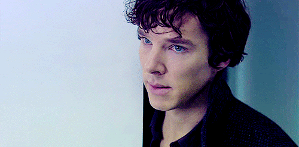
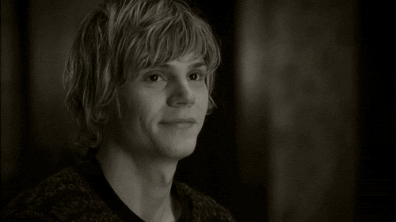
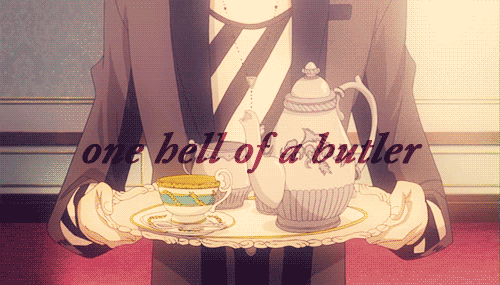

This is a list of my favorite characters. From TV shows to anime, everyone here is prodigious.
There are many modern variations of this detective but I hav a specific favorite. From BBC's show, 'Sherlock', Sherlock Holmes (Benedict Cumberbatch) and John Watson (Martin Freeman) solve cases as the famous slueth and his doctor. Sherlock is prodigious in that he is- literally- a super computer. He is the most inteligent person alive and, played by Cumberbatch, is pretty attractive. Along with his quick wit, Sherlock also has a soft side for John, his beloved partner. The pair are undefeatable and amazing.
From FX's 'American Horror Story: Murder House', Tate Langdon is a ghost haunting the house. He was killed there by the police on the charge of him shooting up his school. Tate falls in love with the residant's daughter, Violet, and they end up dating. Tate is prodigious because he really cares about things. When Violet was in danger, he helped her in any way he could. He spent time with her and cared about her feelings. Tate is also amazing because he is super sensitive and cute. Even though a sociopath, he is really sweet. His character is my favorite of that season.
From the anime, 'Black Butler', Sebastian Michaelis is a demon butler for Ciel Phantomhive. Since Ciel has a contract with Sebastion, the butler is forever indebted to him until Ciel finds the killer of his parents. After that, the butler will devour his soul. Sebastian takes on the appearance of a tall, handsome adult with black hair, red eyes, and pale skin. He loves cats and hates wasting time. The Phantomhive butler is prodigious because he is dedicated. He does anything and everything for Ciel and protects him from harm. Even though he is a demon, Sebastian also has a sence of what is right or wrong. He advises Ciel to make the right decisions and judges other people based on this. Sebastian is simply, "one hell of a butler."
